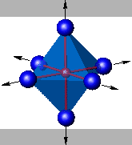
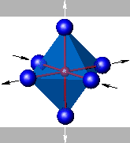
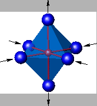

Even when only one MnO6 octahedron is considered, the possible JT distortions become non-trivial, as there are 21 degrees of freedom (seven atoms: one Mn and six O). The following simplifications will be made. First, translational degrees of freedom of the octahedron as a whole can be thrown away (-3). Second, the rotation of the octahedron is ignored since it does not contribute to the energy splitting within one octahedron, and the orthogonality of the octahedron is maintained (-12). Then only 6 degrees of freedom are left. At last the Mn ion is always constrained to be in the center of the octahedron (-3). Now we have 3 degrees of freedom. Borrowing the notation used by Kanamori [82], the normal modes of our interest are Q1, Q2, Q3. They are depicted in Fig. 3.4 for one MnO6 octahedron.
|
   |
The magnitude of the JT distortion is determined by the balance of the degeneracy lifting of eg orbitals and the lattice strain energy compensation. The corresponding eigenenergy EJT of this electron-lattice coupling is estimated to be around 0.25 eV by Dessau and Shen [100]. Relevant to this study, this static Jahn-Teller energy EJT corresponds to a temperature of 2,901 K, much higher than normally probed temperature range. As MnO6 octahedra share their corner O2- atoms, the JT distortions between the neighboring octahedra are directly correlated, giving rise to a strong anti-ferrodistorsive coupling. We would like to point out that the ignored rotation of MnO6 octahedron leads to the buckling mode, which may play a significant role in releasing the lattice strain. However, most theoretical calculations have simply ignored this lattice stiffness effect.
One very important result that should be kept in mind is that the Mn4+O6 octahedron does not subject to the JT distortion. The reason is the absence of eg electrons, and its t2g orbitals all have single occupancy. Thus, its total energy is not sensitive to the lifting of degeneracy of eg or t2g orbitals induced by JT distortions.